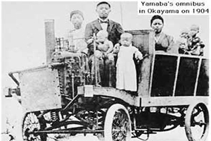
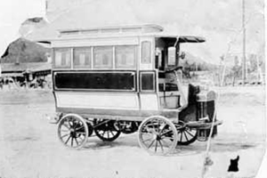
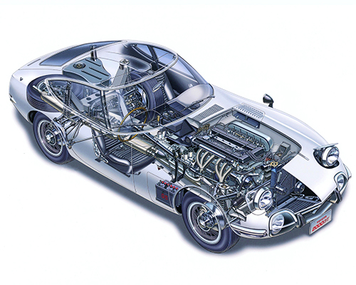
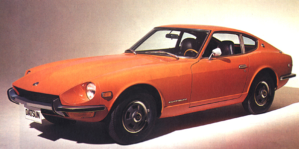
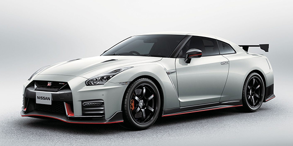

History of the Japanese Motor Industry
Japan has a long history of manufacturing cars, with the first Japanese car built in 1902, which was powered by an American engine. Following this were the steam powered Yamaha Omnibus (1904) and the Yoshida Omnibus (1905).

Yamaha Omnibus circa 1904
The first all-Japanese-made car was built in 1907, a year before Henry Ford began mass-producing the Model T in America (1908), and only 18 years after first car ever was assembled in 1885 by Carl Benz in Germany.

Yoshida Omnibus circa 1905
The first Japanese car to be considered mass produced was the 1917 Mitsibushi Model A, which was based on a vehicle manufactured by Fiat in Italy. 22 units were produced, which pales in comparison with the 735,000+ units of the Model T Ford produced in the same year.
Japanese car manufacture was limited in the years before World War II (WWII). The Japanese car market at the time was dominated by Ford and General Motors, who had built manufacturing plants in Japan in 1925 and 1927, respectively. Following WWII, motor vehicle manufacture remained limited as Japan recovered from the aftermath of the war.
During the 1960s Japan began to accelerate development and production of motor vehicles. At the time, the market consisted mostly of small engined passenger cars (Kei cars), motorcycles and scooters (both of which outsold cars at a ratio of 40:1 in 1960). However, things were soon to change, with demand for cars in the domestic market increasing rapidly, building confidence and wealth for the car manufacturers. Soon, those manufacturers set their sights on international markets and began to pursue sales across the globe. The Japanese were coming.

Toyota 2000GT Cutaway Diagram
The 1970s saw an explosion in the market for Japanese cars, as the world grappled with an international oil crisis. Fuel prices skyrocketed and motorists were seeking smaller, more economical alternatives to their once beloved gas guzzlers. Japanese car manufacturers were also being taken more seriously, with cars such as the Toyota 2000GT demonstrating Japan's engineering prowess and the Nissan (Datsun) 240Z smashing worldwide sports car sales records, bringing an end to the domination of the international sports car market formerly occupied by European (especially British) manufacturers.

1970 Datsun 240Z
From the 1980s to now, Japanese car manufacturers developed their own style and definition of what a car should be. Iconic names such as Supra, RX-7 and Skyline are now cemented in car nomenclature and recognised for their contributions to automotive history.

2018 Nissan GT-R